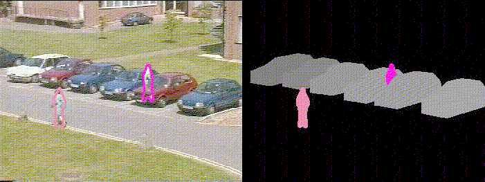

This page describes the Integrated Traffic and Pedestrian Vision System developed by a collaboration between the vision groups at Leeds and Reading Universities as part of the EPSRC's IMV program (EPSRC Grant GR/K46620).
The project combines two model-based tracking systems:
Two complementary approaches for analysing the interactions between people and vehicles were explored:
Last Year I reviewed Daniel Crevier's book 'AI - the tumultuous history of the search for artificial intelligence' in which he relates how in 1966 Marvin Minsky set a first year undergraduate, Gerald Sussman, the task of connecting a television camera to a computer and getting the machine to describe what it saw. He did not succeed, but a joint project between Prof. David Hogg's group at Leeds University and Dr Tieniu Tan's at Reading (taking over the reins from the late Geoff Sullivan) comes close to achieving that goal. They have been able to automatically annotate image sequences to say, for instance, that 'Pedestrian n is now walking slowly in front of parked vehicle m' where n and m are simply the sequential numbers relating to appearance in the scene. Based on work David Hogg's group has done in finding algorithms to identify suspicious behaviour in car parks, it should not be long before the annotation can be extended to say 'Pedestrian n looks about to nick something out of vehicle m better have a human look at the image on the monitor'.The work also featured on BBC Look North (30/3/98), Radio 5 Live (30/3/98), The Daily Telegraph (2/4/98), OCE magazine. According to BBC breakfast (23/4/98) we're a 'civil liberties nightmare.'
Bigger
MPEG movie of tracking results (8M)

postscript version
Jpeg version
MPEG movie (2MB) assessing the likelihood of a particular trajectories. Dots above the heads indicate likelihood of a particular trajectory. For this example the positions of cars were estimated by hand.
There are several other pages mainly meant for internal consumption, but you may find these of interest.
| Web page created by Richard Morris
rjm@comp.leeds.ac.uk
27 March 1998 |
{kind=link}
{kind=link}